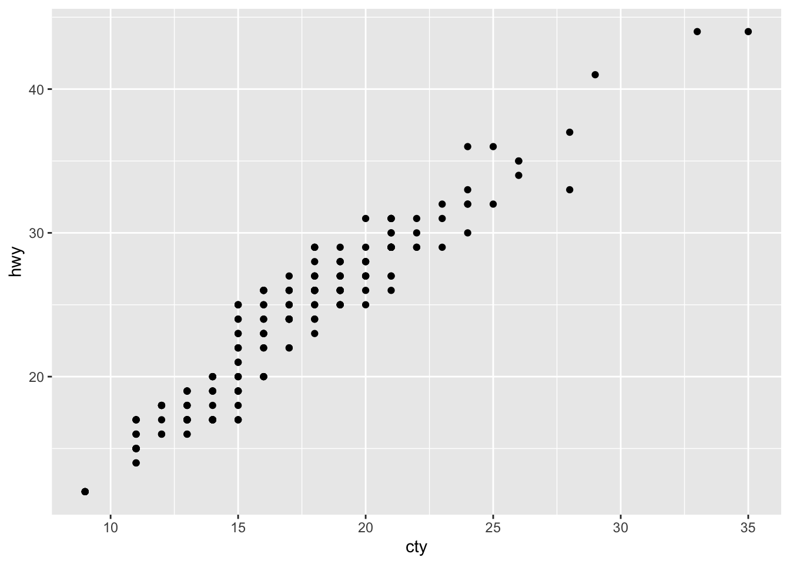

Politikwissenschaftliche Statistik mit R. Sitzung 1: Einführung und Grundlagen
Christoph Garwe, Philipp Meyer, Laura Brune und Christoph Hönnige
Institut für Politikwissenschaft, Leibniz Universität HannoverHerzlich Wilkommen!
Herzlich willkommen zu dieser Einführung in die politikwissenschaftlichen Statistik mit R! In dieser ersten Sitzung werden wir:
- das Programm kennenlernen
- herausfinden, wie man es installiert und bedient
- Objekte und Klassen erstellen und verändern
- Funktionen und Pakete herunterladen und anwenden.
1. Warum R?
R ist ein leistungsstarkes Programm zur statistischen Datenanalyse, das in wissenschaftlichen Anwendungen heute weit verbreitet ist. Sein besonderer Vorteil im Vergleich zu anderen Standardprogrammen liegt in seiner Flexibilität. Diese erhält es zum einen durch seine Paketstruktur. Unterschiedliche sog. Pakete (englisch packages) sind speziell für bestimmte Anwendungen entworfen worden. Sie werden immer nur dann geladen, wenn man sie benötigt. Zu so ziemlich jedem Zweck, den man sich vorstellen kann, liegen zwischenzeitlich R-Pakete vor. Flexibilität verleiht ihm außerdem seine Programmiersprache. Um genau zu sein, ist R eigentlich eine (Statistik-)Programmiersprache, kein Statistikprogramm. Herkömmliche Statistikprogramme beinhalten immer nur begrenzte Anwendungsmöglichkeiten, die durch die Entwicklerfirma vorgegeben sind. Im Gegensatz dazu gewährt R prinzipiell unbegrenzte Anwendungsmöglichkeiten.
Die Pakete werden nicht etwa von einer zentralen Software-Firma entwickelt, sondern von einer Vielzahl von Usern auf der ganzen Welt. Damit profitiert R von der Schwarmintelligenz, während die R Core Group die Qualitätssicherung übernimmt, indem sie neue Pakete prüft und zulässt. Genauso kann man sich die Schwarmintelligenz auf einer Vielzahl von Hilfeforen wie stackoverflow zu Nutze machen, wo Hilfestellung und Lösungen bereitgestellt werden. Auch eine Google-Suche hilft häufig weiter.
Ein weiterer Vorteil (nicht zuletzt für Studierende) liegt darin, dass R als open source-Programm kostenlos zur Verfügung steht. Es wird durch die R Foundation for Statistical Computing über die Webseite des CRAN (Comprehensive R Archive Network, https://cran.r-project.org/) zum Download angeboten. Mittlerweile steht mit RStudio außerdem ein professionelles Interface, das die Bedienung deutlich vereinfacht, kostenlos zur Verfügung.
Allerdings kommen diese Vorteile nicht ohne einige Nachteile: R-Code gilt als recht anspruchsvoll und Vieles wirkt auf den ersten Blick nicht sonderlich intuitiv. Außerdem ist R case-sensitive (unterscheidet Groß- und Kleinschreibung) und verzeiht keine Tippfehler. Ist etwas nicht (exakt) richtig geschrieben, kommt es zu einer Fehlermeldung oder (schlimmer) ungewollten oder unbemerkten Datenmanipulationen. Das hat damit zu tun, dass R auf der Programmiersprache S beruht. Damit ist das Erlernen des Umgangs mit R durch eine steile Lernkurve gekennzeichnet. Das heißt auch: Es ist ganz normal, wenn Sie etwas nicht auf Anhieb verstehen. Geben Sie nicht auf, es wird besser!
Ziel dieses Kurses ist, einen grundständigen Einblick in R sowie alle für das Studium relevanten Anwendungen der statistischen Datenanalyse zu erhalten. Den Code, den Sie dabei kennenlernen, können Sie also für Ihre eigenen Arbeiten übernehmen (ich vermeide es hier, “kopieren” zu sagen). Ein grundständiges Verständnis des Codes bzw. wie und weshalb man ihn verwendet, ist dazu allerdings unerlässlich. Darauf soll insbesondere zu Anfang der Fokus liegen.
2. Installation und Grundlagen der Bedienung
Damit Sie R auf Ihrem Computer verwenden können, müssen Sie es downloaden und installieren. Gehen Sie dazu auf https://cran.r-project.org/ und laden Sie die aktuellste Version für Ihr Betriebssystem (Linux, MacOS oder Windows) herunter. Wählen Sie dabei einen Standort, der möglichst nahe an Ihrem Aufenthaltsort liegt (in Hannover also die Universitäten Göttingen oder Münster). Installieren Sie R anschließend. Nun kann R geöffnet und bedient werden (es empfiehlt sich es einmal auszuprobieren), allerdings wird die Handhabung durch RStudio deutlich vereinfacht. Gehen Sie also nun auf https://www.rstudio.com/products/rstudio/download/ und laden Sie die kostenlose Version herunter. Wichtig ist, dass erst R und danach RStudio installiert wird, da RStudio R voraussetzt.
2.1 Die Console
Nun können wir RStudio öffnen, wodurch R im Hintergrund ebenfalls geöffnet, allerdings mit der vereinfachten Anwenderansicht versehen wird. Code-Input kann links in der Console ausgeführt werden. Geben Sie als Beispiel
Sys.time()## [1] "2021-10-21 21:04:09 CEST"in die Console ein und bestätigen Sie mit Enter, wodurch Datum und Zeit des Systems ausgegeben werden. (Wie Sie vielleicht bemerken, ist die Funktion möglichst intuitiv gehalten. Tipp: Versuchen Sie stets die Intention hinter der Bezeichnung von Funktionen zu erahnen.)
Haben Sie bemerkt, dass RStudio Ihnen Code-Vorschläge gemacht hat? (wenn nicht, tippen Sie nochmal Sys. ein und schauen Sie mal, welche Informationen zum System Sie sonst noch abrufen können). Wenn wir nur Teile von Funktionen eingeben, versucht RStudio sie zu vervollständigen. R hätte uns in seiner klassischen Version dabei nicht weitergeholfen.
Nun wollen wir selbst kreativ werden und weisen Objekten Inhalt in Form von Werten oder Strings (Zeichen oder Zeichenabfolgen) zu. Zentral ist dabei der <--Operator, den Sie jetzt kennenlernen und am besten nie wieder vergessen. Es ist eigentlich ganz einfach: Was rechts von <- steht, wird dem, was links davon steht, zugewiesen (Stichwort: intuitiv). Schreiben Sie in die Console
x <- 1und schicken Sie den Code mit Enter ab. Um zu sehen, ob das geklappt hat, lassen wir uns das Objekt x ausgeben (x in die Console schreiben und mit Enter abschicken).
x## [1] 1Wie gesagt, geht das nicht nur mit Werten - wie 1 - sondern auch mit Strings:
y <- "Hallo"
y## [1] "Hallo"Hinweis: Code wird den gesamten Kurs hindurch in Form solcher sog. Code-Chunks (die leicht gräulich hinterlegten Flächen) im Fließtext präsentiert. Die weiß hinterlegten Flächen zeigen den Output. Schicken Sie die Code-Chunks parallel zur Lektüre ab und prüfen Sie, ob Sie den gleichen Output erhalten.
2.2 Global Environment und History
Die beiden Objekte x und y sind oben rechts in dem Fenster Global Environment erschienen. Das Global Environment ist der Ort, an dem R erstellte Objekte und eingeladene Daten für die Dauer einer R-Session speichert. Es ist gewissermaßen der Raum, in dem wir arbeiten - daher das Synonym Workspace, das Ihnen begegnen wird. RStudio gibt uns mit dem Fenster oben rechts einen direkten Überblick über alle von uns erstellten Objekte und verfügbaren Daten. Im Gegensatz dazu können wir in der History (der Reiter rechts daneben) den gesamten Code, welchen wir jemals geschrieben haben (nicht nur in der aktuellen Session), nachschlagen (jetzt enthält die History nur den Code zur Erstellung von x und y sowie Sys.time()).
Es wird dringend empfohlen, das Global Environment mit Beendigung einer Session zu leeren, d.h. den Workspace beim Schließen von R NICHT zu speichern (R Studio fragt Sie danach). Das wirkt ungewohnt, aber so bleiben Änderungen immer nur vorübergehend und wir verändern das Global Environment nicht nachhaltig. Gleichzeitig wollen wir natürlich in der Lage sein, Datenmanipulationen in einer späteren Session zu wiederholen. Deshalb speichern wir den Code als Text (nicht die Veränderungen im Global Environment, die daraus folgen) in einem R Script.
2.3 R Script
Öffnen Sie ein R Script über
Datei -> Neue Datei -> R-Script
oder
Strg+Shift+Nbzw.Cmd+Shift+N.
Von nun an sollten Sie sämtlichen Code in solchen Skripten schreiben. Beginnen Sie damit: Wir können das bestehende Objekt x folgendermaßen überschreiben:
x <- 2Wenn wir nun Enter drücken, verändern wir nichts (siehe Global Environment), wir rutschen bloß in die nächste Codezeile im Skript. Allerdings können wir mit
-> Run(oben rechts über dem Skript)
oder
Strg+Enterbzw.Cmd+Enter
Codezeilen aus dem Skript an die Console schicken. Ein Blick ins Global Environment bestätigt: x wurde der Wert 2 zugeschrieben (wenn das nicht geklappt hat, stellen Sie sicher, dass sich der Cursor in der Zeile befindet, die an die Console geschickt werden soll, wenn Sie den Code abschicken).
Skripte speichern also den Code in Textform, damit wir ihn später wiederverwenden und prüfen können. Sie sind nicht nur wichtig, um Code zu konservieren, sondern helfen uns auch die Replizierbarkeit unserer Analyse zu gewährleisten. Wissenschaftliche Fachzeitschriften verlangen heutzutage regelmäßig, dass mit dem Manuskript eines Artikels auch Replikationsmaterial zur Verfügung gestellt wird, anhand dessen die Analyse nachvollzogen werden kann. Genauso wird erwartet, dass empirische Arbeiten im Rahmen des Studiums mit Repikationsmaterial abgegeben werden, damit die dort berichteten Ergebnisse überprüft werden können.
Damit wir dies erreichen, können wir unser Skript speichern. Wir speichern es manuell, indem wir zunächst File und dann Save As... auswählen. In der 13. Sitzung werden wir lernen, wie man einzelne Objekte speichern kann.
2.4 Hilfe und Weiteres
Neben dem R Script (oben links), der Console (unten links) und dem Global Environment bzw. der History (oben rechts) gibt es unten rechts noch ein viertes, bisher nicht erwähntes Fenster. Wichtig in der Anwendung sind hier die Reiter Plots, Packages und Help. Unter Plots werden in R erstellte Abbildungen angezeigt (dazu mehr unter 4. und in Sitzungen 6 und 8). Unter Packages erhalten wir einen Überblick über die installierten und geladenen Pakete (dazu mehr unter 4.). Schließlich können wir unter Help auf die Reference Manuals (“Bedienungshandbücher”) für einzelne Funktionen zugreifen. Dazu brauchen wir lediglich den Namen einer Funktion (ohne Klammern) in die Suchleiste einzugeben. Alternativ können wir ein Fragezeichen ? zusammen mit der Funktion in die Console eingeben (oder natürlich über das Skript abschicken):
?tableSchauen Sie sich den Hilfe-Eintrag zu der Funktion table() an, der Ihnen nun angezeigt wird. Die R-Reference Manuals sind in der Regel wie dieser Eintrag aufgebaut mit den Punkten Description, Usage, Arguments usw. Hilfreich ist häufig die Information zu den Argumenten der Funktion (dazu mehr unter 4.), “See Also” zu verwandten oder alternativen Funktionen sowie insbesondere die “Examples”. Diese Anwendungsbeispiele helfen sehr dabei, R-Funktionen und ihre Verwendung zu verstehen.
3. Objektklassen
Wir wollen nun einen ersten Einblick in das Kodieren mit R bekommen. Dafür ist es essentiell, die “Klassen” zu kennen, in denen Objekte vorliegen können. R unterscheidet fünf einfache (sog. atomic) Objektklassen: character, numeric, integer, complex und logical. Vier davon sind für uns unmittelbar relevant und werden im Folgenden näher betrachtet. Welcher “Klasse” die Objekte jeweils angehören, können wir dabei mit der Funktion class() ausgeben lassen.
characters sind Zeichen und Zeichenfolgen und R’s Darstellungsform von Strings. Sie sind durch doppelte Anführungszeichen "" gekennzeichnet:
class("abc")## [1] "character"integers sind ganze Zahlen auf einem diskreten Zahlenstrahl wie 1, 2, 3,… Zwischen 1 und 2 z.B. gibt es nichts. Um sie von kontinuierlichen Zahlen zu unterscheiden, müssen wir ein L indizieren.
class(1L)## [1] "integer"numerics repräsentieren den kontinuierlichen Zahlenstrahl mit wie 1, 1,5, 2,6345,… Zahlen werden in der Regel als numerics gespeichert.
class(1)## [1] "numeric"logicals bezeichnen die logischen wahr-/unwahr-Aussagen TRUE und FALSE.
class(TRUE)## [1] "logical"Mittels explicit coercion (etwa “expliziter Zwang”) können wir die Klasse der Objekte absichtlich verändern. Klassen können nur dann verändert werden, wenn ausreichend Information vorhanden ist, um die Objekte in anderen Klassen sinnvoll zu definieren. In der Praxis ist Coercion in der Regel nur für characters, numerics und logicals relevant, weshalb hier nur diese drei Klassen behandelt werden.
Ein Objekt der Klasse logical können wir sinnvoll als numeric
as.numeric(TRUE)## [1] 1as.numeric(FALSE)## [1] 0oder als character definieren.
as.character(TRUE)## [1] "TRUE"as.character(FALSE)## [1] "FALSE"Den logischen wahr-/unwahr-Aussagen werden als numeric die Werte 1 und 0 und als character die entsprechenden Zeichenfolgen der Worte "TRUE" und "FALSE"zugewiesen.
numerics lassen sich zu characters umwandeln, wodurch die Zahlen auf Zeichen reduziert werden.
as.character(1)## [1] "1"as.character(15)## [1] "15"Wir können auch numerics zu logicals umwandeln. Allerdings geht damit ein Informationsverlust einher, weil jede positive und negative Zahl zu TRUE und 0 zu FALSE “gezwungen” wird.
as.logical(1)## [1] TRUEas.logical(0)## [1] FALSEas.logical(-15)## [1] TRUESchließlich können wir auch character-Objekte zu numeric umwandeln, wenn es sich dabei um Zahlen handelt. Sequenzen von oder mit Buchstaben sind hingegen nicht sinnvoll numerisch zu interpretieren. Entsprechend wird ein NA (“not available”) produziert.
as.numeric("1")## [1] 1as.numeric("1a")## Warning: NAs durch Umwandlung erzeugt## [1] NAas.numeric("abc")## Warning: NAs durch Umwandlung erzeugt## [1] NAGenauso ist es nur dann möglich, characters in logicals umzuwandeln, wenn es sich dabei um die (exakt richtig geschriebenen!) Zeichenfolgen "TRUE" oder "FALSE" handelt.
as.logical("TRUE")## [1] TRUEas.logical("TURE")## [1] NAas.logical("1")## [1] NAInsgesamt sind characters also am wenigsten voraussetzungsvoll: Alles kann als character ausgedrückt werden. numerics setzen voraus, dass etwas als Zahl ausgedrückt werden kann. logicals schließlich sind am voraussetzungsvollsten: Sie erwarten Dichotomie. Demnach kann etwas entweder vorliegen (TRUE) oder nicht vorliegen (FALSE), mehr ist nicht möglich. Das wirkt alles pedantisch, jedoch sind die Klassen von Objekten in R für die Datenanalyse unmittelbar relevant. Sie sparen sich später eine Menge Arbeit, wenn Sie sie sich jetzt gut einprägen. Eine wichtige Rolle spielen sie z.B. im Zusammenhang mit Vektoren.
4. Vektoren
Vektoren sind die grundlegenden und wohl einfachsten Typen von Objekten in R. Sie dienen dazu, Werte oder Zeichenfolgen abzuspeichern. Tatsächlich haben wir in den Beispielen oben Vektoren erstellt.
x <- 2
x## [1] 2Die eckigen Klammern [1] kennzeichnen den Output von Vektoren und geben an, dass 2 der erste (und einzige) Wert innerhalb des Vektors x ist. Vektoren können darüber hinaus mehrere Elemente beinhalten. Der Doppelpunkt : bedeutet “bis”.
x <- 4:38 # Vektor `x` beinhaltet Zahlen 4 bis 38
x## [1] 4 5 6 7 8 9 10 11 12 13 14 15 16 17 18 19 20 21 22 23 24 25 26 27 28
## [26] 29 30 31 32 33 34 35 36 37 38Anhand der eckigen Klammern im Output erkennen wir, dass 4 das erste und 29 das 26. Element innerhalb des Vektors x ist. 31 ist entsprechend das 28. Element. Um Vektoren zu bilden und in ihnen mehrere Elemente zusammenzufassen, bietet sich die Funktion c() (für “combine oder”concatinate") an. Dabei nehmen Vektoren immer die Klasse der Objekte an, die in ihnen gespeichert werden:
x <- c(1, 2, 3)
class(x)## [1] "numeric"x <- c("a", "b", "c")
class(x)## [1] "character"x <- c(TRUE, FALSE, TRUE, TRUE, FALSE)
class(x)## [1] "logical"4.1 Vektoren und Klassen
Die Besonderheit der Vektoren: Sie können immer nur ein und dieselbe Klasse von Objekten beinhalten. Z.B. können sie nur numerische Daten oder nur characters enthalten. Wenn wir versuchen, Elemente unterschiedlicher Klassen in einem Vektor zusammenzufassen, werden sie automatisch der weniger voraussetzungsvollen Klasse zugeordnet.
x <- c(1, "a")
class(x)## [1] "character"x <- c(1, TRUE)
class(x)## [1] "numeric"x <- c("a", TRUE)
class(x)## [1] "character"Dieser Prozess nennt sich implicit coercion (“impliziter Zwang”) und ist tückisch, weil R keine Fehlermeldung über die Veränderung der Klasse ausgibt, obwohl es zu einem Infromationsverlust kommt. Wir müssen also wissen, was wir tun. Deshalb ist es wichtig, über die Klassen der Objekte Bescheid zu wissen.
4.2 Auswählen von Elementen in Vektoren
Einzelne Elemente innerhalb von Vektoren lassen sich mithilfe der eckigen Klammern [] auswählen. Das bietet sich insbesondere bei längeren Vektoren an. Wir erstellen dazu zunächst einen Vektor x, der die ersten acht Buchstaben des Alphabets enthält. Dabei handelt es sich also um einen character-Vektor. Danach wählen wir ein Element aus, indem wir es anhand seiner Position innerhalb des Vektors mithilfe der eckigen Klammern identifizieren.
x <- c("a", "b", "c", "d", "e", "f", "g", "h")
x[3] # Auswählen des dritten Elements## [1] "c"x[4:7] # Auswählen des vierten bis siebten Elements## [1] "d" "e" "f" "g"Der Befehl c() (“combine”, “concatinate”) lässt sich auch hier verwenden:
x[c(2, 5)] # Auswählen des zweiten und des fünften Elements## [1] "b" "e"x[c(5, 5, 5)] # dreimal das fünfte Element auswählen## [1] "e" "e" "e"Genauso können wir eine negative Auswahl treffen und alles außer den von uns angegebenen Elementen auswählen. Elemente, die wir nicht auswählen möchten, versehen wir mit dem Minuszeichen -.
x[-5] # jedes Element außer des fünften auswählen## [1] "a" "b" "c" "d" "f" "g" "h"x[-c(2, 6)] # jedes Element außer des zweiten und des sechsten auswählen## [1] "a" "c" "d" "e" "g" "h"Schließlich können wir eine Auswahl mithilfe eines logischen Vektors treffen. Dieser muss die gleiche Länge wie der Vektor haben, aus dem wir auswählen möchten. Andernfalls versteht R nicht, auf welches Element in x sich welches Element in dem neuen Vektor bezieht. Wir bilden den logischen Vektor mit c() innerhalb der eckigen Klammern von x.
x[c(TRUE, FALSE, FALSE, TRUE, TRUE, TRUE, FALSE, TRUE)]## [1] "a" "d" "e" "f" "h"Hier wurde achtmal eine wahr-/unwahr-Aussage getroffen, genauso viele Elemente beinhaltet x. Damit gibt es für jedes der Elemente in x eine entsprechende Aussage.
Diese Form des Auwählens ist viel zu kompliziert, um sie in der Praxis zu verwenden. Allerdings hilft uns dieses Beispiel zu verstehen, wie logische Vergleiche in R funktionieren. Wenn wir z.B. eine Liste von Namen hätten und wissen wollten, ob “Christoph” darauf steht, antwortet uns R in Form eines logischen Vektors:
namen <- c("Helena", "Philipp", "Jakob", "Julia", "Christoph", "Johannes", "Nicole", "Kerstin")
namen == "Christoph"## [1] FALSE FALSE FALSE FALSE TRUE FALSE FALSE FALSEAls Output erzeugt R einen logischen Vektor. Dieser zeigt uns an, dass innerhalb des Vektors namen die Aussage, dass namen gleich “Christoph” ist, an fünfter Stelle “wahr” ist. An jeder anderen Stelle ist sie unwahr.
Noch ergiebiger sind solche Vergleiche anhand von numerischen Daten. Wenn wir einen Vektor haben, in dem unterschiedliche Jahre gespeichert sind, können wir genauso prüfen, ob das Jahr 2010 darin enthalten ist. Darüber hinaus konnten wir mithilfe von Vergleichszeichen prüfen, ob frühere oder spätere Jahre enthalten sind. Wir verwenden == “gleich”,!= “ungleich”,< “kleiner”, > “größer”, <= “kleiner gleich” und >= “größer gleich”.
jahre <- c(2013, 2005, 1995, 2017, 2021, 1989, 2010, 2018)
jahre == 2010 # Welche Elemente sind gleich dem (sind das) Jahr 2010?## [1] FALSE FALSE FALSE FALSE FALSE FALSE TRUE FALSEjahre < 2010 # Welche Elemente sind kleiner (älter) als das Jahr 2010?## [1] FALSE TRUE TRUE FALSE FALSE TRUE FALSE FALSEjahre >= 2010 # Welche Elemente sind größer/gleich dem (jünger als oder das) Jahr 2010?## [1] TRUE FALSE FALSE TRUE TRUE FALSE TRUE TRUEjahre != 2010 # Welche Elemente sind ungleich dem (nicht das) Jahr 2010? ## [1] TRUE TRUE TRUE TRUE TRUE TRUE FALSE TRUEDie logischen Vektoren, die den Output auf solche Auswahl-Anfragen darstellen, können wir uns zu Nutze machen. Wenn wir wissen möchten, welche Jahre seit 2010 enthalten sind, schreiben wir:
auswahl <- jahre >= 2010
jahre[auswahl]## [1] 2013 2017 2021 2010 2018Effektiver, weil kürzer im Code aber gleich im Ergbenis, ist Folgendes:
jahre[jahre >= 2010]## [1] 2013 2017 2021 2010 2018Technisch passiert in beiden Fällen das: R wendet den logischen Vektor, der in eckigen Klammern steht, auf den Vektor jahre an und gibt die Elemente von jahre aus, die der logische Vektor als TRUE identifiziert. Elemente, die als FALSE identifiziert werden, werden ignoriert. Damit haben wir ein Subset (eine Teilmenge) von jahre definiert.
Bei character-Strings sind solche Größer-Kleiner-Vergleiche nicht sinnvoll interpretierbar (kein Name ist größer oder kleiner als ein anderer). Wenn wir mehrere Elemente innerhalb eines character-Vektors auswählen möchten, bieten sich die logischen Operatoren | (Alt+7 bzw. option+7) für “oder” und & für “und” an.
namen[namen == "Helena" | namen == "Nicole"]## [1] "Helena" "Nicole"namen[namen == "Helena" & namen == "Nicole"]## character(0)namen[namen != "Helena" | namen != "Nicole"]## [1] "Helena" "Philipp" "Jakob" "Julia" "Christoph" "Johannes"
## [7] "Nicole" "Kerstin"namen[namen != "Helena" & namen != "Nicole"]## [1] "Philipp" "Jakob" "Julia" "Christoph" "Johannes" "Kerstin"Die erste Zeile Code fragt, ob ein Element in namen entweder gleich “Helena” oder gleich “Nicole” ist. Das trifft für “Helena” und “Nicole” zu. Die zweite Zeile fragt, ob ein Element in namen sowohl gleich “Helena” als auch gleich “Nicole” ist. Da jedes Element nur ein Name ist, trifft das für kein Element zu. Die dritte Zeile fragt, ob ein Element entweder nicht “Helena” oder nicht “Nicole” ist. Weil kein Element beides sein kann, trifft das bei jedem Element zu. Schließlich fragt Zeile 4, ob ein Element sowohl nicht “Helena” als auch nicht “Nicole” ist. Das trifft für alle Elemente außer “Helena” und “Nicole” zu. Wenn wir also eine Liste aller Namen, außer Helena und Nicole haben möchten, geht das so:
andere <- namen[namen != "Helena" & namen != "Nicole"]
andere## [1] "Philipp" "Jakob" "Julia" "Christoph" "Johannes" "Kerstin"4.3 Einfache Operationen mit Vektoren
Schließlich können wir mit Vektoren auch einfache mathematische Operationen durchführen.R erkennt die in einem Vektor gespeicherten Werte und verwendet diese zur Berechnung.
x <- 2
x + x## [1] 44 - x## [1] 2y <- 3
x * y## [1] 6y / 2## [1] 1.5x^3## [1] 8R verfügt auch über einige mathematische Funktionen, die wir üblicherweise auf Vektoren anwenden:
sum(x, y) # Summe von x und y## [1] 5sqrt(x) # Quadratwurzel von x## [1] 1.414214mean(c(x, y)) # arithmetisches Mittel von x und y (Beachte die Verwendung von `c()`)## [1] 2.5median(c(x, y)) # Median von x und y## [1] 2.55. Funktionen und Pakete
In der Auseinandersetzung mit Klassen, Vektoren und beim Kennenlernen des Programms sind wir Funktionen wie Sys.time(), c() und class() begegnet. Bisher haben wir uns aber noch nicht im Einzelnen damit befasst, welche interne Struktur Funktionen haben und wie sie in R angelegt sind.
5.1 base-R und die Grundstruktur von Funktionen
Funktionen sind Paketen zugeordnet. Sie können immer nur dann verwendet werden, wenn wir das zugehörige Paket installiert und geladen haben. Zu welchem Paket eine Funktion gehört, können wir herausfinden, indem wir die Hilfefunktion (s.o.) zu der Funktion aufrufen. Das Paket finden wir oben links in geschweiften Klammern hinter dem Namen der Funktion.
?summaryDie Funktion summary() gehört demnach zum Paket base. base ist das Ursprungspaket von R und wird gemeinsam mit R installiert. Es beinhaltet grundsätzliche Funktionen, ohne die eine Datenanalyse nicht erfolgreich ablaufen kann. Für spezialisiertere Anwendungen müssen wir allerdings spezialisierte Pakete installieren.
Funktionen besitzen Argumente, die wir spezifizieren können bzw. zum Teil müssen. Dadurch bestimmen wir, worauf R die Funktion bezieht und wie genau sie ausgeführt werden soll. Argumente stehen innerhalb der Klammern () hinter dem Namen der Funktion und werden mithilfe des (einfachen) Gleichheitszeichens = auf einen bestimmten Wert festgesetzt oder mit Inhalt versehen. In etwa so:
Funktion(Argument1 = a, Argument2 = b).
Manche Argumente müssen explizit spezifiziert werden, während andere mit einer Standardeinstellung (dem “default”) versehen sind. R erzeugt eine Fehlermeldung, wenn obligatorische Argumente nicht bestimmt wurden.
summary(object = ) # Argument "object =" nicht spezifiziertsummary(object = jahre) # jetzt funktioniert es## Min. 1st Qu. Median Mean 3rd Qu. Max.
## 1989 2002 2012 2008 2017 2021Außerdem müssen Argumente nicht ausdrücklich genannt werden. Da sie eine feste Reihenfolge haben, reicht es aus, wenn wir in der richtigen Reihenfolge sinnvoll interpretierbaren Input in die Klammern des Befehls schreiben. Insbesondere bei Funktionen mit nur einem Argument spart man sich in der Regel die Nennung des Arguments.
summary(jahre)## Min. 1st Qu. Median Mean 3rd Qu. Max.
## 1989 2002 2012 2008 2017 2021RStudio geht uns zur Hand, indem es die Argumente einer Funktion vorschlägt, wenn wir uns mit dem Cursor innerhalb der Klammern einer Funktion befinden und Tab drücken. So muss man nicht die Argumente unterschiedlicher Funktionen im Kopf haben.
5.2 Installieren und Laden von Paketen
Als Beispiel für ein spezialisiertes Paket möchten wir nun das Paket ggplot2 kennenlernen, dem wir in Zusammenhang mit der Visualisierung von Daten wieder begegnen werden. Wir installieren Pakete mit dem Befehl install.packages(), wobei das Paket in Anführungszeichen "" gesetzt wird.
install.packages("ggplot2")Nun ist ggplot2 auf unserem Computer installiert. Prüfen Sie mal im Fenster rechts unten unter Packages, ob Sie es finden. Damit wir es auch verwenden können, müssen wir es außerdem laden. Mit library() holen wir es, wenn man so will, aus der Bibliothek hervor (tatsächlich finden Sie rechts unten unter Packages die Bezeichnung System Library für den Ort, an dem alle Pakete gespeichert sind).
library(ggplot2)Nun ist das Paket geladen und wir können auf seine Funktionen zugreifen. Wenn Sie es nochmal unter Packages suchen, werden Sie feststellen, dass sich in dem Kästchen links neben dem Paket nun ein Haken befindet. Alternativ hätten wir das Paket auch laden können, indem wir den Haken per Mausklick setzen.
Als Nächstes möchten wir eine Funktion aus dem Paket ggplot2 verwenden. Mit qplot() (für “qick plot”) lassen sich recht einfach ansehnliche Grafiken erstellen. Dazu verwenden wir den Datensatz mpg zum Benzinverbrauch von Automodellen, den ggplot2 zu Veranschaulichungszwecken gleich mitliefert (Näheres unter ?mpg). mpg beinhaltet unter anderem Information dazu, wie viele Meilen ein bestimmtes Modell mit einer Gallone (US-Maßeinheit für Flüssigkeiten) Benzin zurücklegen kann, und zwar die Variablen cty für Meilen in der City und hwy für Meilen auf dem Highway. Um herauszufinden, ob sich ein stärkerer Verbrauch in der Stadt wie auf dem Land gleichermaßen niederschlägt, können wir einen Scatterplot dieser beiden Variablen zeichnen.
Um den Scatterplot zu zeichnen, müssen wir (mindestens) die Argumente x - mit dem wir definieren, welche Variable auf der X-Achse abgebildet sein soll, y - mit dem wir die Y-Achse definieren, und data - mit dem wir den verwendeten Datensatz definieren - bestimmen. Wir möchten den Verbrauch in der Stadt cty auf der X-Achse abbilden, den Verbrauch auf dem Highway hwy auf der Y-Achse abbilden und verwenden den Datensatz mpg.
qplot(x = cty, y = hwy, data = mpg)
Da die Reihenfolge für die ersten beiden Argumente festgelegt ist, müssen wir diese Argumente nicht ausdrücklich nennen (siehe Reihenfolge der Argumente unter ?qplot). Dadurch, dass ab der dritten Stelle weitere Argumente (...) möglich sind, ist danach die Reihenfolge aufgehoben sodass wir data explizit nennen müssen.
qplot(cty, hwy, data = mpg)
Wie wir sehen, gibt es einen (erwartbaren) eindeutigen Zusammenhang des Verbrauchs in der Stadt und des Verbrauchs auf dem Lande. Jedoch ist keine ganz eindeutige Vorhersage des Verbrauchs auf dem Highway anhand eines Werts für den Verbrauch in der Stadt möglich: Unterschiedliche Modelle mit dem gleichen Verbrauch innerorts variieren in Hinblick auf den Verbrauch außerorts um bis zu 8 Meilen pro Gallone (siehe cty == 15).
6. Zusammenfassung
Diese Einführungssitzung bot einen breit angelegten Einstieg in die Datenanalyse mit R. Code wird in R über die Console abgeschickt, während wir ihn im R Script speichern. Über File und Save As... werden Skripte gespeichert. Dies ist notwendig, um unsere Analyse wiederverwendbar, kontrollierbar und replizierbar zu machen. Dabei erstellte und veränderte Objekte werden im Global Environment für die Dauer einer Session gespeichert, während die History allen jemals abgeschickten Code speichert. characters, integers, numerics und logicals sind vier häufig anzutreffende Objektklassen. Die Veränderung von Klassen ist mit Informationsverlust verbunden und gelingt nur, wenn ausreichend Information vorhanden ist, um Objekte in anderen Klassen sinnvoll zu interpretieren. Vektoren beinhalten immer nur Elemente derselben Klasse. Pakete beinhalten Funktionen und sind unterschiedlich spezialisiert. Manche Pakete sind vorinstalliert, andere müssen mit install.packages() installiert und vor jedem Gebrauch mit library() geladen werden. Funktionen beinhalten Argumente, von denen nur manche spezifiziert werden müssen. Solange die Reihenfolge eine eindeutige Zuordnung ermöglicht, müssen Argumente nicht ausdrücklich genannt werden.
7. Aufgaben
- Installieren Sie
RundR Studiowie unter 2. beschrieben. Führen Sie die Code-Chunks aus 2. aus. - Erstellen Sie zwei numerische Vektoren, die je fünf beliebige Werte beinhalten. Summieren Sie die Vektoren und multiplizieren Sie sie miteinander. Bilden Sie einen weiteren Vektor, indem Sie die beiden Vektoren miteinander kombinieren.
- Erstellen Sie einen character-Vektor, der die Buchstaben des Alphabets beinhaltet. Bilden Sie einen zweiten character-Vektor, der als Subset des ersten nur die Konsonanten beinhaltet.